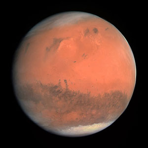

Mars is very cold. The average temperature on Mars is minus 80 degrees Fahrenheit -- way below freezing!
Mars is rocky with canyons, volcanoes and craters all over it. Red dust covers almost all of Mars. It has clouds and wind, just as Earth does. Sometimes the wind blows the red dust into a dust storm. Tiny dust storms can look like tornados, and large ones can cover the whole planet!
Mars has about one-third the gravity of Earth. A rock dropped on Mars would fall slower than a rock dropped on Earth. Things weigh less on Mars than they weigh on Earth. A person who weighs 100 pounds on Earth would only weigh about 37 pounds on Mars because of less gravity.